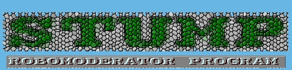

S.T.U.M.P. Robomoderator Program

``Making Moderation Easy''
If You Want To Propose a Moderated Newsgroup
If you plan to propose a new group (both alt and Big 8) and consider
using STUMP robomoderator or ReadySTUMP site hosting, please read this.
Note
If you plan on using ReadySTUMP hosting service
and want to propose a newsgroup (both in alt.* and Big Eight), contact me
(ichudov@algebra.com)
before submitting a proposal. This can save you from submitting erroneous
proposals and making easily fixable mistakes. The purpose of this is not
to influence your moderation policy, but to make sure that ReadySTUMP-related
technical aspects are spelled out properly. Your policy is your business.
If you plan on using my moderation
bot STUMP and host it by yourselves on your own Unix machine,
please review sample charters below and feel free to join the
stump-users mailing list. To subscribe, send email to majordomo@algebra.com,
saying "subscribe" in the body of the message
From: your@email.address
To: majordomo@algebra.com
Subject: whatever
subscribe stump-users
This is a list to help STUMP users maintain their moderation bots
and cope with problems.
Useful Links
Charters
First of all, every moderated newsgroup needs a Charter. A Charter
is like a constitution of a newsgroup. It spells out rules such as which
articles are accepted and which are unacceptable, how moderators are
replaced, and so on. All people in the newsgroup should abide by the
charter. Charters do not have to be anything too fancy. Charters for
alt newsgroups are generally simplier than charters for groups that go
through a voting process. Feel free to use these examples of newsgroup
charters to write your own.
Technical Aspects of Creating alt.* Newsgroups
If you want to use my ReadySTUMP hosting service for a moderated alt.*
newsgroup: Generally, new moderators, regardless of which moderation
service they want to use, have to to the following:
- Contact David Lawrence from isc.org, requesting to create a forwarding
address for their newsgroups.
- Issue a specially formatted newgroup control message, by injecting it
into a USENET newsserver. Typically this is done manually and
requires knowledge of NNTP protocol. This is not rocket
science, however it is a technical task and requires good understanding
of how USENET works. Instructions on how to do it are available in
alt.config. See
this instruction manual to see if you want to do it by yourself.
To save moderators from a hassle of doing these tasks by themselves,
I can create the newsgroup and request forwarding at no charge. It is
included in the ReadySTUMP service.
Criticism of Your Proposal
When you propose an alt newsgroup, you have to post the proposal to
alt.config for "review" by interested people. Expect to see criticism
and suggestions. Remember that all criticism is only good for you,
as it can help you avoid some major mistakes or misnaming your
newsgroup. Ultimately, no amount of criticism can prevent you from
creating any alt.* newsgroup you wish. Being friendly generally tends
to attract good advice.
When you propose a Big Eight newsgroup (a soc.* or a sci.* or a rec.*, etc)
newsgroup, remember that your proposal will have to pass through a lengthy
discussion and voting process. You have to expect that a few people will
make quite caustic comments about your proposal. Depending on your
personality, this may or may not be pleasant, but it is to be expected.
Consider this process a test of your determination to be a moderator. After
all, moderators must be patient people to be effective, and the RFD/CFV
process is one of the best tests of patience.
Rmgroups
Rmgroup is a technical term, an abbreviation of "remove group". In the
original USENET design, RMGROUPS were used to delete badly configured
newsgroups. Due to widespread abuse and lack of built in authentication,
Rmgroup messages are no longer effective and are widely ignored by all
but most misconfigured news sites.
In the alt.* hierarchy, anyone can issue a rmgroup message,
just as anyone can create a newsgroup.
There are a few self-approinted guardians of propriety, who watch all
newsgroup messages and rmgroup those newly created newsgroups that they
do not like. But, just as masturbation has not made anyone pregnant,
rmgroup messages do not really have an effect on all newsgroups. If you
see a rmgroup message that deletes your newsgroup, simply ignore it.

Copyright © 1996 Igor Chudov. This work is licensed under a Creative Commons Attribution 4.0 International License.